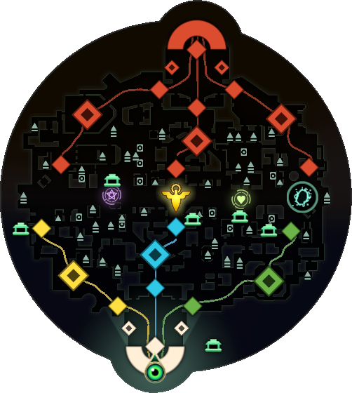

Map overview

The map is divided into 3 primary, color-coded lanes: York (Yellow Lane), Broadway (Blue Lane), and Greenwich (Green Lane). Each lane is further divided into 3 unique locations and contains the game's primary and secondary objectives. Each lane has its own Zipline, which shares that lane's respective color. Ziplines extend from the end of one base to the other.